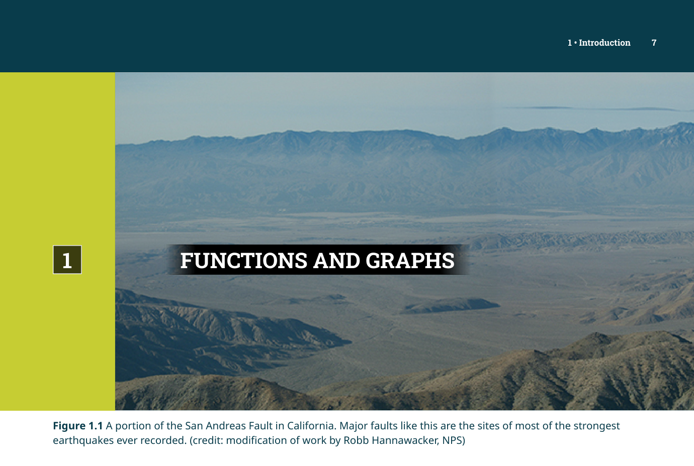
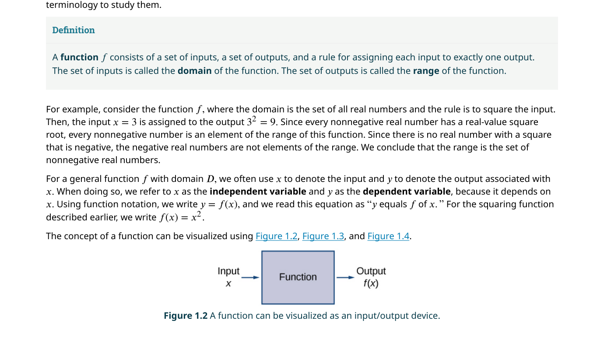
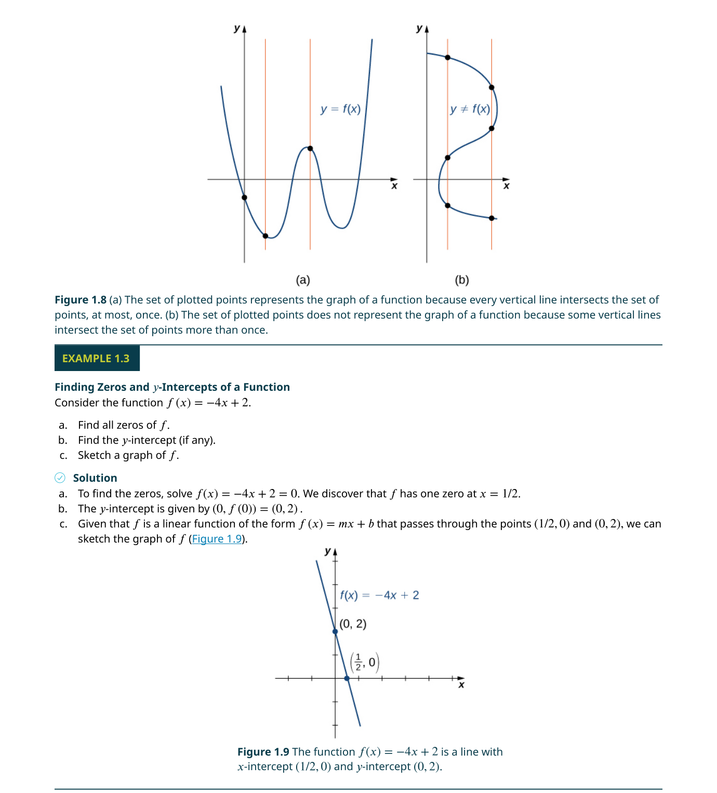
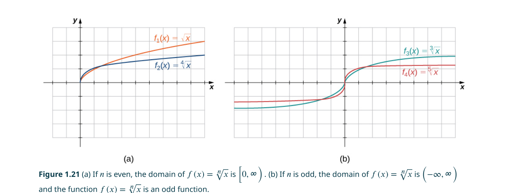
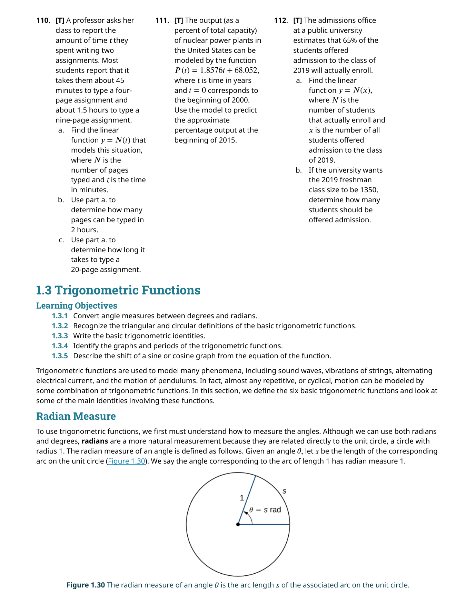
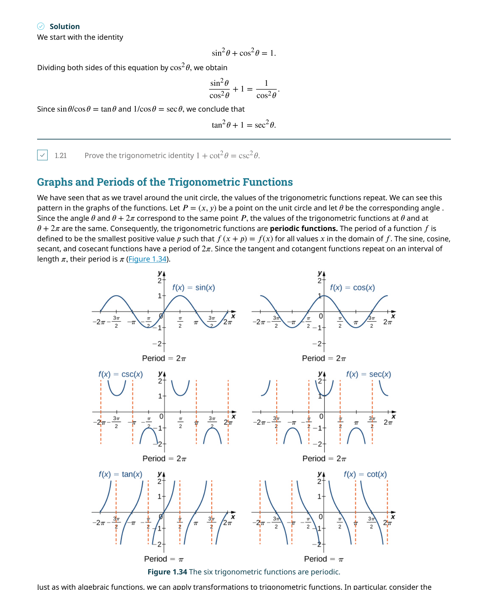
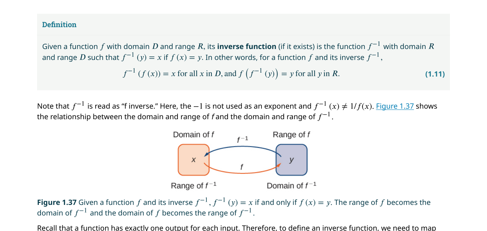
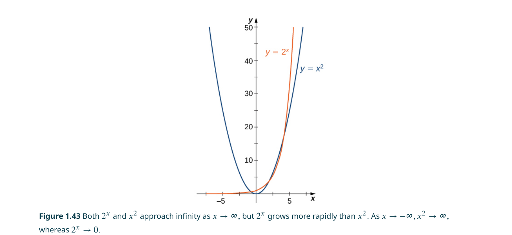
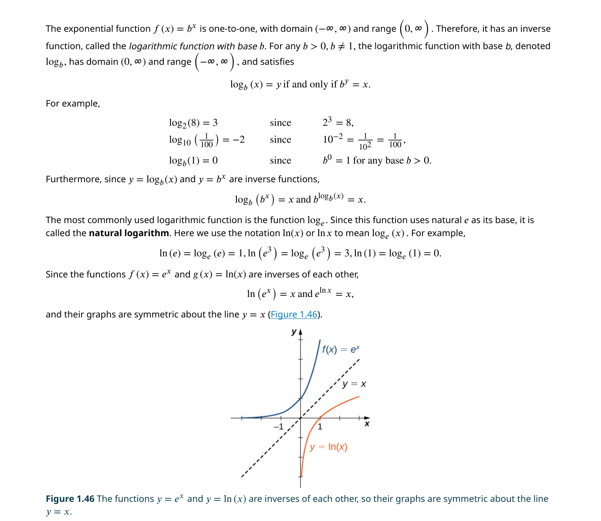

函數與圖形
📌 本章要解決的核心問題
微積分是研究變化的數學。但在討論「變化率」和「極限」之前，我們必須確保對函數——這個微積分的核心語言——有足夠熟練的掌握。本章系統性地回顧所有在微積分中會反覆出現的函數類型，並建立嚴格的函數觀念。
🔑 關鍵概念（10 條）
- 函數定義：每個輸入對應唯一輸出的規則——$f: A \to B$
- 定義域與值域：函數可以接受哪些輸入（定義域），產生哪些輸出（值域）
- 垂直線檢驗：判斷一個圖形是否為函數的快速方法
- 函數的對稱性：偶函數（$f(-x)=f(x)$）與奇函數（$f(-x)=-f(x)$）
- 函數的增減性：遞增、遞減、常數函數
- 基本函數類型：線性、多項式、有理、冪函數、三角、指數、對數
- 函數的變換：平移、伸縮、反射——如何從基本圖形推導複雜圖形
- 合成函數：$(f \circ g)(x) = f(g(x))$——函數的串接
- 反函數：$f^{-1}(f(x)) = x$——「取消」原函數的效果
- 指數與對數的互逆關係：$a^{\log_a x} = x$ 與 $\log_a(a^x) = x$
🧭 本章推理地圖
函數定義與基本類型（§1.1–§1.2） → 建立函數的語言與圖形直覺 → 運用 變換、合成與反函數（§1.3–§1.4）操縱函數 → 掌握 指數與對數（§1.5）這對微積分中最重要的超越函數 → 為第 2 章極限（Ch2）提供完整的函數工具箱
1.1 函數回顧（Review of Functions）
函數（function）是整個微積分的基礎語言。在日常生活中，我們經常遇到「某個量取決於另一個量」的情況：正方形的面積取決於邊長、車速取決於油門深度、郵資取決於包裹重量。數學上用函數來精確刻畫這類依賴關係。

函數 $f$ 包含三個要素：一個定義域（domain）$D$、一個對應域（codomain）$C$、以及一條規則，將 $D$ 中的每一個元素分配給 $C$ 中的恰好一個元素。
寫法：$f: D \to C$，其中 $y = f(x)$ 表示 $x$（自變數）透過 $f$ 對應到 $y$（應變數）。

定義域（domain）是函數可以接受的所有輸入值所構成的集合。在沒有特別聲明的情況下，我們取自然定義域——也就是在實數範圍內，使函數表達式有意義的所有 $x$ 值。例如 $f(x) = \sqrt{x}$ 的自然定義域是 $[0, \infty)$，因為負數在實數範圍內沒有平方根。
值域（range）則是函數實際輸出的所有值的集合。注意值域不一定等於對應域——例如 $f(x)=x^2$ 的對應域可以是 $\mathbb{R}$，但它的值域只是 $[0,\infty)$，因為平方永遠是非負的。
一個常見的混淆點是：$y = x^2$ 和 $f(x) = x^2$ 有什麼區別？前者是一個關係式，描述 $x$ 和 $y$ 之間的約束；後者是一個函數宣告，明確定義了從 $x$ 到 $y$ 的映射規則。函數宣告讓我們可以討論 $f$ 的性質（定義域、值域、反函數等），而單純的關係式做不到這一點。
函數的表示方式
函數可以用四種方式表示：（1）代數公式（如 $f(x)=x^2+3x-2$）；（2）圖形（在座標平面上畫出所有 $(x,f(x))$）；（3）表格（列舉輸入和對應的輸出值）；（4）文字描述（如「速度是時間的函數」）。每一種表示方式各有優缺點，在微積分中我們會在這些表示之間自由切換。

垂直線檢驗（Vertical Line Test）是判斷一個圖形是否為函數的快速方法：如果任何一條垂直線與圖形相交超過一個點，則該圖形不是函數。原因很簡單——如果同一條垂直線 $x=a$ 與圖形交於 $(a, y_1)$ 和 $(a, y_2)$（$y_1 \neq y_2$），那同一個輸入 $a$ 就對應到兩個不同的輸出，違反了函數的定義。
📝 範例
📝 範例：找出定義域與值域給定 $f(x) = \dfrac{1}{\sqrt{x-2}}$，求其自然定義域。
解：分母 $\sqrt{x-2}$ 必須有意義且不為零。平方根號內的 $x-2 \geq 0$ → $x \geq 2$；分母不能為零 → $\sqrt{x-2} \neq 0$ → $x \neq 2$。綜合以上，定義域為 $(2, \infty)$。
值域：由於 $\sqrt{x-2} > 0$（對所有 $x > 2$），分母恆正，因此 $f(x) > 0$。當 $x \to 2^+$ 時 $f(x) \to +\infty$；當 $x \to \infty$ 時 $f(x) \to 0^+$。因此值域為 $(0, \infty)$。
函數的對稱性
函數的對稱性在計算定積分和簡化問題時極為有用。偶函數（even function）滿足 $f(-x) = f(x)$，圖形對稱於 $y$ 軸。典型的例子是 $f(x)=x^2$、$f(x)=\cos x$、$f(x)=|x|$。奇函數（odd function）滿足 $f(-x) = -f(x)$，圖形對稱於原點。典型的例子是 $f(x)=x^3$、$f(x)=\sin x$、$f(x)=1/x$。
大多數函數既不是偶函數也不是奇函數。例如 $f(x)=x^2+x$：$f(-x)=x^2-x$，這個既不等於 $f(x)$ 也不等於 $-f(x)$。但任何定義在對稱區間上的函數都可以寫成一個偶函數和一個奇函數的和：$f(x) = \frac{f(x)+f(-x)}{2} + \frac{f(x)-f(-x)}{2}$。
合成函數
當一個函數的輸出成為另一個函數的輸入時，我們得到合成函數（composite function）。$(f \circ g)(x) = f(g(x))$ 的意思是：先對 $x$ 執行 $g$，得到 $g(x)$，再把這個結果餵給 $f$。注意順序很重要——$f \circ g$ 和 $g \circ f$ 通常完全不同（例如 $f(x)=x^2$、$g(x)=x+1$，則 $(f \circ g)(x) = (x+1)^2$，而 $(g \circ f)(x) = x^2+1$）。
$(f \circ g)(x)$ 的定義域不是直接取 $f$ 和 $g$ 定義域的交集。正確的作法是：$(f \circ g)(x)$ 定義域 = 所有使得 $g(x)$ 有定義 且 $g(x)$ 落在 $f$ 的定義域內的 $x$。很多學生在這一點上出錯——例如 $f(x)=\sqrt{x}$、$g(x)=x-3$，則 $(f \circ g)(x)=\sqrt{x-3}$ 的定義域是 $x \geq 3$，而不是所有實數。
1.2 函數的基本類型（Basic Classes of Functions）
微積分中反覆出現的函數類型可以歸納為幾個基本類別。熟練掌握這些類型的圖形特徵和代數性質，是後續學習極限、導數、積分的必要條件。以下我們逐一介紹每種類型。
線性函數（Linear Functions）
線性函數是唯一滿足「變化率為常數」的函數。在第 3 章你會學到：對任何可微函數，在一個很小的區間內，我們都可以用它的切線（一條線性函數）來近似它。這就是為什麼線性函數如此基礎——它是理解所有非線性現象的起點。
多項式函數（Polynomial Functions）
$n$ 次多項式的一般形式為：$p(x) = a_n x^n + a_{n-1} x^{n-1} + \cdots + a_1 x + a_0$（$a_n \neq 0$）。其中 $n$ 稱為次數（degree）。二次函數（$n=2$）是拋物線，三次函數（$n=3$）可能有一個或兩個轉折點。
多項式的重要性在於：它們是最「友善」的函數——定義域是全部實數、連續、可微無限次、易於計算。在冪級數（第 6 章）中你會看到，大量非多項式函數（如 $\sin x$、$e^x$）都可以用無窮多項式來精確表示。
📝 範例
📝 範例：辨識函數類型判斷 $f(x)=\dfrac{x^2-1}{x-1}$ 是否為多項式函數。
解：乍看之下這是一個有理函數（分子和分母都是多項式）。但化簡後：$\dfrac{x^2-1}{x-1} = \dfrac{(x-1)(x+1)}{x-1} = x+1$（對所有 $x \neq 1$）。所以對 $x \neq 1$ 而言，$f(x)$ 等價於線性函數 $x+1$，但 $x=1$ 不在定義域內（因為分母為零）。因此 $f$ 不是多項式——它在 $x=1$ 有一個可移除的不連續點（removable discontinuity），而真正的多項式函數定義域是完整的 $\mathbb{R}$。
冪函數（Power Functions）
冪函數的形式為 $f(x) = x^n$ 或更一般的 $f(x) = k x^n$（$k$ 為常數）。指數 $n$ 可以是正整數、負整數、分數（對應到根號函數如 $\sqrt{x}=x^{1/2}$）。冪函數是多項式的「基本構件」——多項式就是不同冪函數的線性組合。

有理函數（Rational Functions）
有理函數是兩個多項式的比值：$R(x) = \dfrac{P(x)}{Q(x)}$（$Q(x) \not\equiv 0$）。它們的定義域排除所有使分母為零的 $x$ 值。有理函數可能產生垂直漸近線（vertical asymptote）——當 $x$ 趨近於使分母為零但分子不為零的值時，$|R(x)| \to \infty$。
函數的變換（Transformations）
理解函數變換可以讓你從一個熟悉的「父函數」圖形快速推導出更複雜函數的圖形。基本變換包括：
- 垂直平移：$y = f(x) + c$（$c>0$ 時上移，$c<0$ 時下移）
- 水平平移：$y = f(x - c)$（$c>0$ 時右移，$c<0$ 時左移——注意這裡的「反向」直覺！）
- 垂直伸縮：$y = c f(x)$（$|c|>1$ 時拉伸，$0<|c|<1$ 時壓縮）
- 水平伸縮：$y = f(cx)$（$|c|>1$ 時壓縮，$0<|c|<1$ 時拉伸——又是反向！）
- 反射：$y = -f(x)$（關於 $x$ 軸反射）；$y = f(-x)$（關於 $y$ 軸反射）
這是最容易出錯的地方。$y = f(x-2)$ 是把圖形向右移 2 單位（不是左移！）。為什麼？因為要得到和 $y=f(x)$ 中同樣的輸出，你需要 $x$ 比原來大 2——所以整個圖形往右跑。水平伸縮同理：$y=f(2x)$ 讓圖形變窄（壓縮），因為 $x$ 只需要原來的一半就能達到同樣的輸出。
1.3 三角函數（Trigonometric Functions）
三角函數是微積分中最重要的週期函數——它們描述了任何具有重複模式的現象，從聲波、光波到交流電、機械振動。在微積分中，三角函數之所以特別，是因為它們的導數和積分會「循環」回到彼此，形成封閉的微分關係。
弧度制（Radian Measure）

六個基本三角函數
在直角三角形中，$\sin\theta = \frac{\text{對邊}}{\text{斜邊}}$、$\cos\theta = \frac{\text{鄰邊}}{\text{斜邊}}$、$\tan\theta = \frac{\sin\theta}{\cos\theta}$。另外三個是它們的倒數：$\csc\theta = \frac{1}{\sin\theta}$、$\sec\theta = \frac{1}{\cos\theta}$、$\cot\theta = \frac{1}{\tan\theta}$。但微積分中最重要的視角是單位圓定義——對於任意角 $\theta$，$(\cos\theta, \sin\theta)$ 就是單位圓上對應於角度 $\theta$ 的點的座標。
三角函數的圖形都具有週期性：$\sin x$ 和 $\cos x$ 的週期是 $2\pi$，$\tan x$ 的週期是 $\pi$。$\sin x$ 和 $\cos x$ 的圖形形狀相同，只是相位差 $\frac{\pi}{2}$：$\sin(x+\frac{\pi}{2}) = \cos x$。

要記住各象限中哪些三角函數為正：All（第一象限全部為正）、Sine（第二象限只有 sine/cosecant 為正）、Tangent（第三象限只有 tangent/cotangent 為正）、Cosine（第四象限只有 cosine/secant 為正）。
三角函數的變換
一般正弦函數：$f(x) = A \sin(Bx - C) + D$，其中 $|A|$ = 振幅（amplitude）、$\frac{2\pi}{|B|}$ = 週期（period）、$\frac{C}{B}$ = 相位偏移（phase shift）、$D$ = 垂直偏移。理解這四個參數如何影響圖形，是處理週期性模型的基礎。
📝 範例
📝 範例：分析正弦函數給定 $f(x) = 3\sin(2x - \frac{\pi}{3}) + 1$，求振幅、週期、相位偏移和垂直偏移。
解：重寫為標準形式 $f(x)=3\sin(2(x-\frac{\pi}{6}))+1$。
振幅 $|A|=3$、週期 $=\frac{2\pi}{2}=\pi$、相位偏移 $=\frac{\pi}{6}$（右移）、垂直偏移 $D=1$（上移 1 單位）。
三角函數的所有微積分公式（$\frac{d}{dx}\sin x = \cos x$、$\lim_{x\to 0}\frac{\sin x}{x}=1$）只在弧度制下成立。 如果你習慣使用度數，請在代入任何微積分公式前轉換為弧度：$x_{rad} = x_{deg} \cdot \frac{\pi}{180}$。 一個實用的檢查方法：$\sin(0.1) \approx 0.1$ 只有在弧度制下才成立（小角度近似）。
三角函數的週期性與對稱性：$\sin$ 和 $\cos$ 的週期為 $2\pi$，$\tan$ 的週期為 $\pi$。$\sin$ 是奇函數（$\sin(-x) = -\sin x$），圖形關於原點對稱；$\cos$ 是偶函數（$\cos(-x) = \cos x$），圖形關於 $y$ 軸對稱。這些對稱性在積分計算中極為有用——奇函數在對稱區間上的定積分為零。
1.4 反函數（Inverse Functions）
如果一個函數 $f$ 將 $x$ 對應到 $y$，那麼它的反函數（inverse function）$f^{-1}$ 就是把 $y$ 對應回 $x$。換句話說：$f^{-1}(f(x)) = x$ 且 $f(f^{-1}(y)) = y$。反函數的概念在解方程式中無處不在——指數函數的反函數是對數、$x^2$ 的反函數是 $\sqrt{x}$、$\sin x$ 的反函數是 $\arcsin x$。

一個函數必須是一對一（one-to-one）才能有反函數。一對一的意思是不會有兩個不同的輸入對應到同一個輸出。用圖形判斷：水平線檢驗（Horizontal Line Test）——如果任何一條水平線與函數圖形相交超過一次，則該函數不是一對一的。
這個符號是初學者最容易搞混的地方。$f^{-1}(x)$ 是反函數，不是倒數。$\sin^{-1}(x)$ 是反正弦（arcsine），不是 $\frac{1}{\sin x}$（後者寫作 $\csc x$）。這是兩個完全不同的概念。
反函數的圖形是原函數圖形關於直線 $y=x$ 的反射。因此 $(a, b)$ 在 $f$ 的圖形上若且唯若 $(b, a)$ 在 $f^{-1}$ 的圖形上。反函數的定義域就是原函數的值域，反之亦然。
尋找反函數的步驟
- 從 $y = f(x)$ 出發
- 交換 $x$ 和 $y$：$x = f(y)$
- 解出 $y$（用 $x$ 表示）
- 結果就是 $y = f^{-1}(x)$
📝 範例
📝 範例：求反函數求 $f(x) = \dfrac{2x-1}{x+3}$ 的反函數。
解：設 $y = \frac{2x-1}{x+3}$。交換 $x$ 和 $y$：$x = \frac{2y-1}{y+3}$。解出 $y$：$x(y+3) = 2y-1$ → $xy+3x = 2y-1$ → $xy-2y = -3x-1$ → $y(x-2) = -(3x+1)$ → $y = \frac{3x+1}{2-x}$。因此 $f^{-1}(x) = \frac{3x+1}{2-x}$（$x \neq 2$）。
反三角函數
因為三角函數是週期性的，它們在整個定義域上不是一對一的。為了定義反三角函數，我們必須限制定義域：$\sin x$ 限制在 $[-\frac{\pi}{2}, \frac{\pi}{2}]$、$\cos x$ 限制在 $[0, \pi]$、$\tan x$ 限制在 $(-\frac{\pi}{2}, \frac{\pi}{2})$。反三角函數的輸出範圍就是這些限制區間。
$\arcsin x$ 的值域：$[-\frac{\pi}{2}, \frac{\pi}{2}]$
$\arccos x$ 的值域：$[0, \pi]$
$\arctan x$ 的值域：$(-\frac{\pi}{2}, \frac{\pi}{2})$
1.5 指數與對數函數（Exponential and Logarithmic Functions）
指數函數和對數函數是微積分中最優雅的一對互逆函數。它們不僅描述了指數增長（人口、細菌、複利）和衰減（放射性、藥物代謝），更在微積分中具有獨一無二的性質：自然指數函數 $e^x$ 的導數就是它自己。
指數函數
指數函數的形式為 $f(x) = b^x$，其中 $b > 0$ 且 $b \neq 1$。當 $b>1$ 時，函數遞增（指數增長）；當 $0  $b^x \cdot b^y = b^{x+y}$ $\dfrac{b^x}{b^y} = b^{x-y}$ $(b^x)^y = b^{xy}$ $b^{-x} = \dfrac{1}{b^x}$ 對數函數 $y = \log_b(x)$ 是指數函數 $b^y = x$ 的反函數。$\log_b(x)$ 回答了這個問題：「$b$ 的幾次方等於 $x$？」例如 $\log_2 8 = 3$，因為 $2^3 = 8$。由於 $b^y > 0$（對任何 $y$），對數函數的定義域是 $(0,\infty)$。  對數將乘法轉換為加法，將指數轉換為乘法——這正是它們在計算上如此強大的原因。 $\log_b(xy) = \log_b x + \log_b y$ $\log_b(\frac{x}{y}) = \log_b x - \log_b y$ $\log_b(x^r) = r \log_b x$ $\ln x = \log_e x$，以 $e$ 為底的對數。$\ln x$ 在微積分中遠比 $\log_{10}$ 常用，因為 $\frac{d}{dx}\ln x = \frac{1}{x}$（而 $\frac{d}{dx}\log_{10}x = \frac{1}{x\ln 10}$）。自然的底數帶來最簡潔的公式。 雙曲函數由指數函數組合而成：$\sinh x = \frac{e^x-e^{-x}}{2}$、$\cosh x = \frac{e^x+e^{-x}}{2}$。它們在許多方面與三角函數類似（例如 $\cosh^2 x - \sinh^2 x = 1$），但沒有週期性。雙曲函數在物理學（懸鏈線）、工程學和微分方程中有重要應用。
$e \approx 2.71828\ldots$ 不是一個人為選擇的數字。它的定義是 $e = \lim_{n\to\infty} (1 + \frac{1}{n})^n$。這個極限之所以重要，是因為它讓指數函數 $e^x$ 擁有完美的微分性質：$\frac{d}{dx}e^x = e^x$。使用任何其他底數都會在前面多出一個 $\ln b$ 的係數。在整個微積分中，$e$ 是「最自然」的指數底數。指數律
對數函數
對數的性質
對數可以拆開乘積和商，但不能拆開和或差。$\log(x+y)$ 沒有簡單的展開式。很多初學者會把這個和 $\log(xy) = \log x + \log y$ 搞混。自然對數 $\ln x$
📝 範例
📝 範例：解指數方程式
解 $5 \cdot 2^{3x} = 80$。
解：$2^{3x} = 16 = 2^4$。因為指數函數 $2^t$ 是一對一的，所以 $3x = 4$ → $x = \frac{4}{3}$。
另一種解法（當不能直接看出冪次時）：$2^{3x} = 16$ → $\ln(2^{3x}) = \ln 16$ → $3x \ln 2 = \ln 16$ → $x = \frac{\ln 16}{3\ln 2} = \frac{4\ln 2}{3\ln 2} = \frac{4}{3}$。雙曲函數（Hyperbolic Functions）
📋 關鍵概念回顧（Key Concepts）
- 函數：將定義域中每個輸入對應到值域中恰好一個輸出的法則，可透過解析式、表格、圖形或文字描述表示。
- 定義域與值域：定義域是函數可接受的所有輸入值集合；值域是函數產生的所有輸出值集合。
- 鉛直線檢驗：若任何鉛直線與圖形相交超過一點，則該圖形不代表函數。
- 分段定義函數：函數在定義域的不同區間有不同的定義規則，如絕對值函數、階梯函數。
- 對稱性：偶函數滿足 \(f(-x)=f(x)\)（y 軸對稱）；奇函數滿足 \(f(-x)=-f(x)\)（原點對稱）。
- 遞增與遞減：若 \(x_1 \lt x_2\) 時 \(f(x_1) \lt f(x_2)\)，則函數遞增；若 \(f(x_1) \gt f(x_2)\)，則遞減。
- 函數類型：多項式、有理函數、根式函數、指數函數、對數函數、三角函數與超越函數。
- 函數變換：平移（水平／垂直）、伸縮（水平／垂直）、鏡射（對 x 軸或 y 軸）改變函數圖形的位置與形狀。
- 函數組合：\((f \circ g)(x) = f(g(x))\)，先執行內層 g，再將結果傳入外層 f；定義域受內層值域限制。
- 一對一函數：每個值域元素只對應到一個定義域元素；圖形通過水平線檢驗；一對一函數才有反函數。
- 反函數：\(f^{-1}(y)=x \iff f(x)=y\)；\(f(f^{-1}(x))=x\) 且 \(f^{-1}(f(x))=x\)；圖形互為 \(y=x\) 的鏡射。
- 指數函數：\(f(x)=b^x\)（\(b>0, b \neq 1\)）；定義域為所有實數，值域為 \((0,\infty)\)；自然指數 \(e^x\) 是最重要的指數函數。
- 對數函數：\(f(x)=\log_b x\) 為 \(b^x\) 的反函數；定義域為 \((0,\infty)\)；自然對數 \(\ln x\) 是最常用的對數函數。
- 指數律與對數律：\(b^{x+y}=b^x b^y\)、\((b^x)^y=b^{xy}\)；\(\log_b(xy)=\log_b x+\log_b y\)、\(\log_b(x^r)=r\log_b x\)。
- 換底公式：\(\log_b x = \dfrac{\ln x}{\ln b}\)，可將任意底數的對數轉換為自然對數計算。
- 三角函數：正弦、餘弦、正切等；以弧度為單位定義；基本恆等式如 \(\sin^2\theta+\cos^2\theta=1\)。
📐 關鍵公式（Key Equations）
| 公式 | 說明 |
|---|---|
| $$f: D \to \mathbb{R}$$ | 函數 \(f\) 將定義域 \(D\) 對應到實數 |
| $$f(-x)=f(x)$$ | 偶函數的對稱條件 |
| $$f(-x)=-f(x)$$ | 奇函數的對稱條件 |
| $$y=f(x)+c$$ | 垂直平移：\(c>0\) 上移，\(c \lt 0\) 下移 |
| $$y=f(x+c)$$ | 水平平移：\(c>0\) 左移，\(c \lt 0\) 右移 |
| $$y=cf(x)$$ | 垂直伸縮：\(|c|>1\) 拉伸，\(|c| \lt 1\) 壓縮 |
| $$y=f(cx)$$ | 水平伸縮：\(|c|>1\) 壓縮，\(|c| \lt 1\) 拉伸 |
| $$(f \circ g)(x)=f(g(x))$$ | 函數組合：g 的輸出作為 f 的輸入 |
| $$f^{-1}(f(x))=x,\quad f(f^{-1}(x))=x$$ | 反函數的抵消性質 |
| $$b^{x+y}=b^x b^y$$ | 指數加法法則 |
| $$b^{x-y}=\dfrac{b^x}{b^y}$$ | 指數減法法則 |
| $$(b^x)^y=b^{xy}$$ | 指數冪法則 |
| $$\log_b(xy)=\log_b x+\log_b y$$ | 對數乘法法則 |
| $$\log_b\!\left(\dfrac{x}{y} \right)=\log_b x-\log_b y$$ | 對數除法法則 |
| $$\log_b(x^r)=r\log_b x$$ | 對數冪法則 |
| $$\log_b x=\dfrac{\ln x}{\ln b}$$ | 換底公式：任意底數轉換為自然對數 |
| $$\sin^2\theta+\cos^2\theta=1$$ | 基本三角恆等式 |
本章摘要
本章建立了微積分所需的函數語言基礎。以下是六個最重要的觀念：
- 函數 = 規則 + 定義域 + 每個輸入對應唯一輸出——這是所有後續概念的根基
- 垂直線檢驗判斷圖形是否為函數，水平線檢驗判斷是否有反函數
- 函數的變換（平移、伸縮、反射）讓你從熟悉的父函數快速推導複雜圖形
- 三角函數用弧度制，$\sin^2\theta+\cos^2\theta=1$ 是靈魂公式
- 反函數$f^{-1}$ 的圖形 = $f$ 關於 $y=x$ 的反射——定義域和值域互換
- $\ln x$ 和 $e^x$ 互為反函數——這個互逆關係是微積分中最強大的工具之一
| 函數類型 | 一般形式 | 關鍵特徵 |
|---|---|---|
| 線性 | $f(x)=mx+b$ | 常數變化率，直線 |
| 多項式 | $p(x)=a_nx^n+\cdots+a_0$ | 定義域 $\mathbb{R}$，連續可微 |
| 有理 | $R(x)=\frac{P(x)}{Q(x)}$ | 垂直漸近線在 $Q(x)=0$ |
| 冪函數 | $f(x)=x^n$ | $n$ 決定定義域和圖形形狀 |
| 三角 | $\sin x, \cos x, \tan x$ | 週期性，有界（$\sin,\cos$） |
| 指數 | $f(x)=b^x$ | 通過 $(0,1)$，$y=0$ 為漸近線 |
| 對數 | $f(x)=\log_b x$ | 定義域 $(0,\infty)$，通過 $(1,0)$ |
⚠️ 初學者常見錯誤
$f^{-1}$ 是反函數，不是倒數。$\sin^{-1}(x) = \arcsin x$，不是 $\frac{1}{\sin x}$（那是 $\csc x$）。這個符號衝突是歷史遺留問題，但對初學者造成無盡的混淆。記住：指數 $-1$ 在函數符號上代表反函數，在數值上才代表倒數。
$f(x+3)$ 是把圖形向左移（不是右移）。$f(2x)$ 是把圖形壓縮（不是拉伸）。水平變換的「反向」直覺違反日常經驗——解決方法是：把變換想像成「為了得到同樣的輸出，$x$ 需要做什麼調整」。$f(x+3)$ 中，要得到 $f(0)$ 的輸出，需要 $x=-3$→圖形左移。
對數可以拆乘積和商，但絕對不能拆和與差。同樣的，$\sqrt{x+y} \neq \sqrt{x} + \sqrt{y}$、$(x+y)^2 \neq x^2 + y^2$。這些「分配律妄想」是代數錯誤的主要來源——每一種運算都有自己的規則，不能想當然耳地套用。
當你化簡一個函數表達式時，定義域可能改變。例如 $\frac{x^2-1}{x-1}$ 化簡為 $x+1$，但前者在 $x=1$ 無定義，後者有定義。它們不是完全相同的函數。在處理有理函數、合成函數、反函數時，每次都要檢查定義域的變化。
微積分中所有公式都以弧度制為前提。$\frac{d}{dx}\sin x = \cos x$ 只在 $x$ 以弧度為單位時成立。如果你用度數計算 $\sin 30^\circ$，請在代入微積分公式前轉換為 $\sin(\frac{\pi}{6})$。一個好習慣：看到 $\pi$ 就想到弧度。
✅ 自我檢測（Self-Check）
完成以下題目檢驗你對本章核心概念的掌握程度。點擊展開查看答案。
題 1：若 $f(x)=x^3$，判斷它是偶函數、奇函數、還是兩者皆非？
答案：奇函數。因為 $f(-x)=(-x)^3=-x^3=-f(x)$，滿足奇函數定義。幾何上，$y=x^3$ 的圖形對稱於原點。
題 2：判斷對錯：「$f^{-1}(x)$ 永遠等於 $\frac{1}{f(x)}$」
答案：錯。$f^{-1}(x)$ 是反函數（inverse function），不是倒數。例如 $\sin^{-1}(x)=\arcsin x$，而 $\frac{1}{\sin x}=\csc x$，兩者完全不同。指數 $-1$ 在函數符號上代表反函數，在數值上才代表倒數。
題 3：求函數 $f(x)=\frac{\sqrt{x^2-4}}{x-1}$ 的定義域。
答案：$x \in (-\infty,-2] \cup [2,\infty)$。根號內需要 $x^2-4 \ge 0 \Rightarrow |x| \ge 2$，分母 $x-1 \neq 0 \Rightarrow x \neq 1$。由於 $x \neq 1$ 已在 $|x| \ge 2$ 的範圍之外（$1$ 不在 $(-\infty,-2]\cup[2,\infty)$ 內），最終定義域為 $(-\infty,-2] \cup [2,\infty)$。
題 4：已知 $f(x)=e^{2x-1}$，求其反函數 $f^{-1}(x)$。
答案：$f^{-1}(x)=\frac{\ln x + 1}{2}$。令 $y=e^{2x-1}$，取自然對數得 $\ln y = 2x-1$，解出 $x=\frac{\ln y+1}{2}$，再將 $x,y$ 互換即得反函數。定義域為 $x > 0$。
題 5：$f(x)=\ln x$，$g(x)=\sqrt{x+1}$，求 $(f \circ g)(3)$ 及合成函數的定義域。
答案：$(f \circ g)(3)=\ln\sqrt{4}=\ln 2$。$(f \circ g)(x)=\ln\sqrt{x+1}$，定義域要求根號內 $x+1 \ge 0$ 且對數引數 $\sqrt{x+1} > 0$，即 $x > -1$。故定義域為 $(-1,\infty)$。
📚 延伸資源
- Khan Academy — Functions：互動練習，涵蓋定義域、值域、函數變換
- Desmos Graphing Calculator：可視化函數圖形，即時觀察參數變化對圖形的影響
- 3Blue1Brown — Essence of Calculus：YouTube 系列，提供微積分的直覺理解
- 下一章預告：第 2 章 — 極限將正式引入微積分的核心概念，使用本章學到的所有函數類型